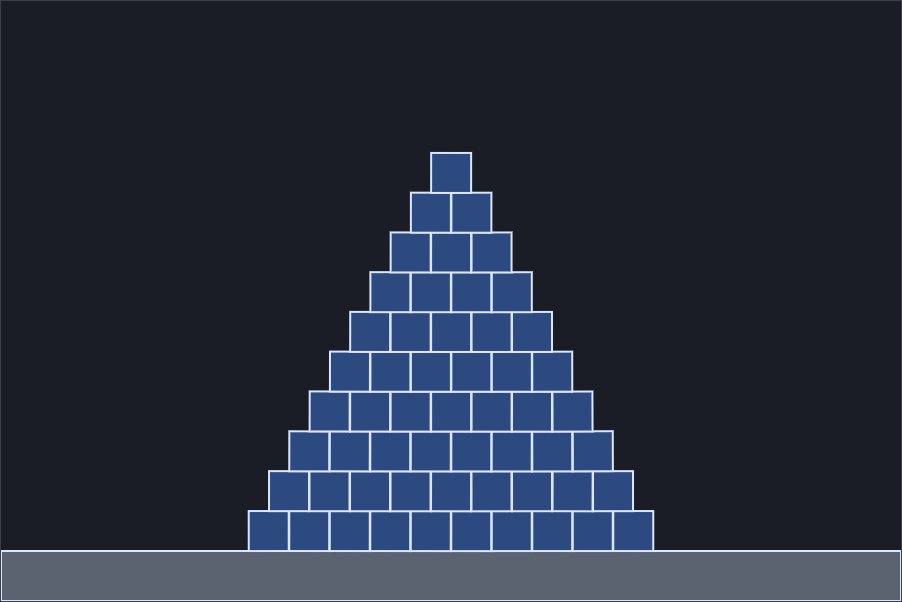
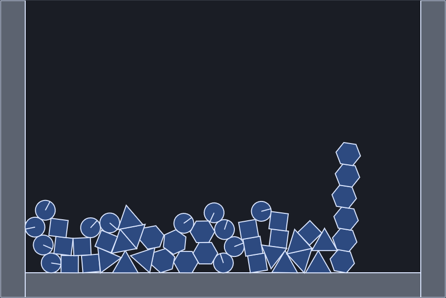
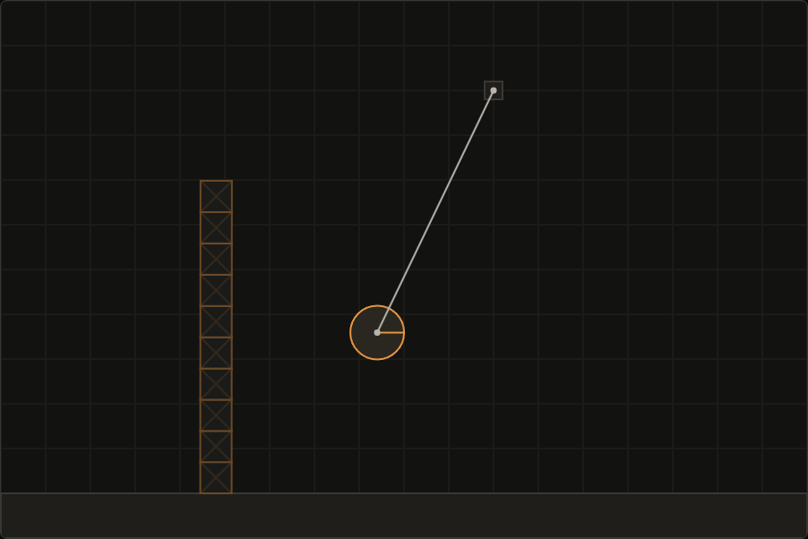
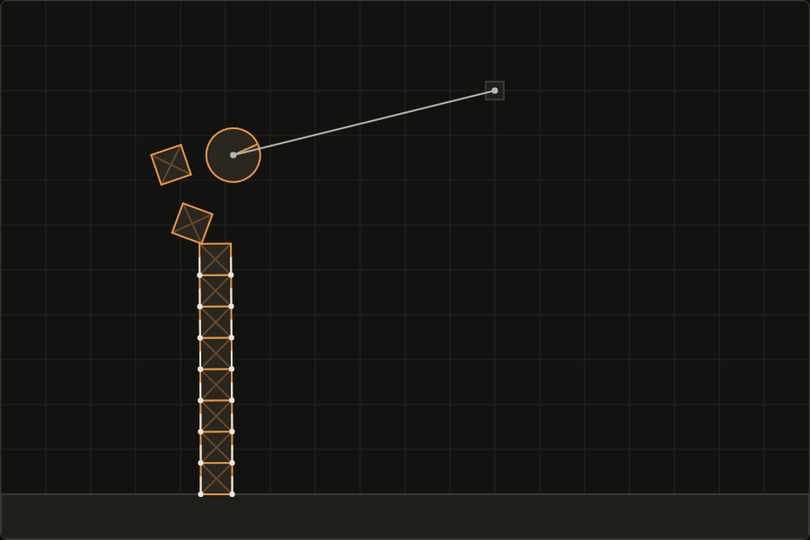
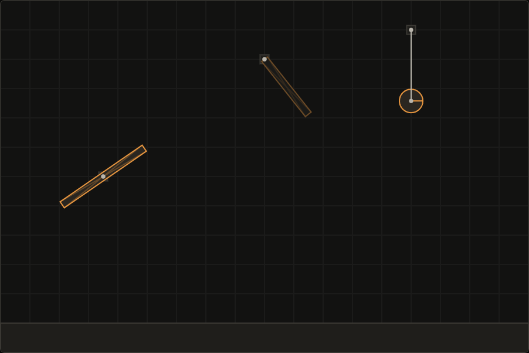
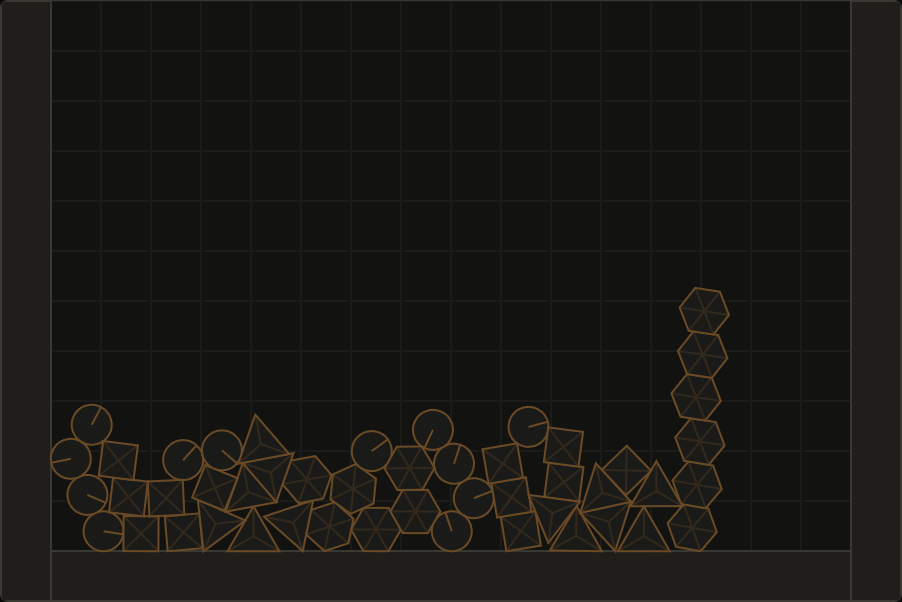

Impulse: a 2D physics engine from scratch in TypeScript
2D physics with no library to blame.
Impulse is a 2D rigid body physics engine I wrote from scratch in TypeScript, with no physics libraries: no Matter.js, no Planck, no Rapier. It simulates circles, boxes and convex polygons that collide, stack, fall asleep, get pinned together with joints and get grabbed with the mouse. It runs in the browser and has zero runtime dependencies.
My map was Erin Catto's Box2D Lite: sequential impulses, warm starting, accumulated impulse clamping. I used it for the ideas and wrote every piece to fit this codebase, then tried to prove each piece against something other than itself. The first 12 stages built the engine and ended with a list of things that did not work: a ball that bounced 3.5% too high, a 500-body pile that never fell asleep, and fast bodies that only static walls could stop. Five more stages went through that list, and replaced the solver on the way.
The rules I set first
Four rules before any physics: a fixed 1/60 s timestep, a deterministic engine (no Math.random), no allocations in the hot paths, and an engine that never touches the DOM or the canvas. The first one is the one that bites, so it lives in one small class.
// FixedStepper: the only place frame time is allowed to exist
advance(frameSeconds: number): number {
this.accumulator += Math.min(frameSeconds, MAX_FRAME_SECONDS);
let steps = 0;
while (this.accumulator >= FIXED_DT) {
this.world.step(FIXED_DT);
this.accumulator -= FIXED_DT;
steps++;
}
return steps;
}The browser gives you a different frame time on every frame, and the engine never sees it. The accumulator turns frame time into whole fixed steps, and a long frame (a background tab, a breakpoint) is capped at 0.25 s so catching up cannot spiral. The test feeds the same simulation frames at 30, 60 and 144 fps and as an uneven sequence, and requires each result to match plain manual stepping of the same number of steps, bit for bit.
Seventeen stages
I built it in stages and did not start the next one until the current one had green tests and a working demo. Stages 13 to 17 are the second round:
| stage | what it added | how it was proven |
|---|---|---|
| 1 | circles and boxes, semi-implicit Euler, fixed timestep, canvas renderer, drag-and-drop spawning | free fall matches the analytic result; frame rate never changes the outcome |
| 2 | SAT collision detection and contact manifolds | known overlaps give the exact normal, depth and points; swapping bodies flips the normal |
| 3 | impulse solver: friction, restitution, clamped accumulated impulses | boxes come to rest; elastic collisions conserve energy to 1e-9 |
| 4 | warm starting, persistent contacts, sleeping | a 10-box tower stands 10 s; reruns are bit-identical |
| 5 | spatial hash broadphase | same pairs as brute force, five cell sizes |
| 6 | pin and rod joints | pendulum period within 2% of the physics formula |
| 7 | benchmark page, GitHub Pages deploy | the built site uses only base-aware URLs |
| 8 | convex polygons | agrees with the box code on 4,000 random pairs |
| 9 | block solver, sequential position correction, continuous collision | 20-box towers stand and sleep; bullets stop at thin walls |
| 10 | joint limits, motors, springs, ropes, mouse joint | spring frequency and deflection match theory |
| 11 | interactive demo: scenes, grabbing, pause, step, reset | every scene simulates cleanly |
| 12 | pre-commit hook, CI, browser tests | 14 tests drive the built site in Chrome |
| 13 | restitution reads the speed before gravity | a bouncing ball returns to within 2% of its drop height |
| 14 | raycast, box overlap query, category, mask and group filters | ray hits and normals match the analytic answer; filters hold for contacts and for continuous collision |
| 15 | a soft-step solver: substeps, soft contacts, a relax pass | every earlier test still passes, towers of 20 boxes still stand and sleep |
| 16 | damping, rolling resistance, and a fix to how spinning circles touch | a rolling ball slows at the textbook rate; a 500-body pile sleeps |
| 17 | contacts up to 2 cm before bodies touch, for every shape pair | eleven of the new tests fail with the margin set to zero; a bullet stops instead of staying pinned |
What it looks like






Stacking
The most useful thing I did was not obvious at first. Tall stacks jittered: a 10-box tower stood, but kept moving at roughly 9 cm/s and did not fall asleep at 10 solver iterations. More iterations helped slowly and not even reliably: 60 iterations was worse than 40. As far as I can tell, two things were wrong. Every box rests on two contact points, and solving them one after the other lets the pair rock. And my position correction pushed every contact apart at the same moment, so a stack's shared compression cancelled itself out and never went away.
The fix was a 2-point block solver, which solves both points of a contact together as a tiny problem with four cases (both pushing, either one alone, neither), plus a position correction that runs contact by contact so each one sees the shifts of the last.
Time until every body in the tower is asleep. The tests stop at 20 s.
The block solver is also much less sensitive to the iteration count. Time until sleep, by iterations:
| iterations | 10-box tower | 20-box tower |
|---|---|---|
| 6 | 1.1 s | collapsed |
| 8 | 0.9 s | 3.0 s |
| 10 | 0.9 s | 2.4 s |
| 15 | 0.7 s | 1.7 s |
| 20 | 0.7 s | 1.4 s |
| 30 | 0.6 s | 1.0 s |
At 6 iterations the 20-box tower collapses. From 8 up it stands and sleeps, so 10 (the Box2D Lite default) has some margin. Stage 15 later replaced this solver altogether, as explained below.
The ball that gained 3.5%
The old step added gravity to every velocity, and then solved the contacts. Restitution reads the approach speed when the contact is set up, so the ball hitting the ground was already 9.81 × 1/60 = 0.16 m/s faster than it had been on the last step, and it bounced with that extra speed. Over a drop of 4.5 m that is a rebound 3.5% too high.
The fix is an order change, not new math: set up the contacts first, so restitution sees the speed before gravity, and add gravity after. The ball now comes back to 0.9985 of its drop height, and I tightened the test bounds from 0.95 to 1.06 down to 0.98 to 1.02. It was one of the smallest changes of the whole round and it needed the most thinking, because the solver had no place to put "after prepare, before solve", so I split it in two.
Asking the world questions
Until now the only way to find a body was a point test for the mouse. Stage 14 added world.raycast(x0, y0, x1, y1, mask), which returns the closest body, the hit point and the surface normal, and world.boundsOverlapping(box). I did not write a new ray-shape routine. The continuous collision code already sweeps a point against every shape (that is what stops a bullet at a wall), so a ray is that sweep with a radius of zero, plus the normal of the plane it entered through. The test compares circles against the analytic distance, checks a box turned 45 degrees, and a hexagon whose flat side sits at cos 30° from its center.
The same stage added collision filtering with the Box2D rules: a body has a category, a mask and a group. Two bodies meet only if each mask contains the other's category, and a shared non-zero group overrides that, positive always colliding and negative never. The check sits in one place for contacts and once more in the continuous collision sweep, and a test covers the second one, because a filtered wall that still stops fast bullets would be an odd bug to meet later.
Swapping the solver
The old solver ran 10 iterations of sequential impulses over the contacts, with a 2-point block solver for stability, and pushed overlapping bodies apart after the solve. Stage 15 replaced all of that with the idea from Box2D v3 (Erin Catto's soft step): split each step into 4 substeps, and in each substep add gravity, warm start, solve with a soft contact constraint that treats overlap like a stiff, heavily damped spring, move the bodies, then relax: solve again with the bias switched off, so the push-out speed does not turn into energy. Restitution is applied once at the end, using the speed measured before the step. That deleted the block solver and the position projection completely.
// one substep, four per step
for (const joint of joints) joint.prepare(1 / substep);
for (const body of bodies) if (body.isSimulated) body.integrateVelocity(gravity, substep);
// warm start, then solve with bias
this.iterate(joints, true);
for (const body of bodies) if (body.isSimulated) body.advance(substep);
// relax: same constraints, no bias
this.iterate(joints, false);The surprise was how little of the test suite noticed. On the first run of the new solver 178 of 184 tests passed. Four of the six failures were about things that had changed on purpose: free fall now sums over 4 substeps per step, resting impulses are stored per substep (the test now expects m g dt / 4), a test called "block solver" now says "two-point contacts", and a two-point elastic bounce came back at 1.76 m/s instead of 2 after one restitution sweep, so I run six. The other two were real: bullets flew through the wall. The continuous collision sweep started from the body's position minus its step motion, which is off by a rounding error, and a bullet that had been stopped exactly on the wall's surface was suddenly counted as starting inside it. Storing the exact start position fixed both. The towers, the joints, the pendulum periods and the sleeping tests passed untouched.
The one number I had to choose is the contact stiffness. I ran the same towers and pyramids at several values and let the test suite vote:
| stiffness | tower top height, ideal 19.5 | tower asleep | pyramid asleep | test suite |
|---|---|---|---|---|
| 30 Hz | 19.369 | 1.33 s | 0.85 s | all pass |
| 40 Hz | 19.426 | 1.03 s | 0.82 s | all pass, chosen |
| 45 Hz | not measured | not measured | not measured | 2 sleep tests fail |
| 60 Hz | 19.467 | 2.22 s | 1.45 s | 5 tests fail |
| 90 Hz | tower flies apart | not asleep at 10 s | not asleep at 10 s | not run |
Stiffer contacts sag less but jitter, and jitter keeps bodies awake longer. 40 Hz is the point where the old tests still hold, not a value from a paper. The 30 Hz and 60 Hz rows were measured with the solver as it stood at that moment; they use boxes only, so the circle fix below cannot have changed them.
The box that would not sleep
After the first round, a pile of 500 mixed bodies never fell asleep in 8 seconds. I assumed the solver was too loose. With the new solver it still did not sleep, so I looked at which bodies were actually moving. After 30 seconds every body but one was standing still (0.000 m/s) and that one moved at 0.020 m/s with a spin of 0.063 rad/s. Sleeping is per island, and a pile is one island, so one body kept all 500 awake.
That body was a box with a single contact point, rocking back and forth every few seconds, the way a box balanced on a ball would. A real one would lose energy to friction and to the ball sinking into the ground. So I added the missing physics: rolling resistance, a torque limited by the normal force that resists relative spin, and linear and angular damping. The first version made things worse: 495 bodies were now moving, at up to 0.02 m/s. The rolling impulse was starting from zero every step, so the constraint acted like noise. Once it was stored in the contact and warm started like the other impulses, the pile fell asleep at 4.4 to 7.5 s.
The test for it is a ball rolling without slipping. Rolling resistance r slows it at (2/3) r g / ball radius, and my first run of the test missed by a factor of 1.7. The ball hovered about a millimetre inside the ground with a downward speed of 8 cm/s, and its normal impulse read exactly zero at the end of every step I printed. The solver measures how far a contact has opened by moving the contact anchor with the body, including its rotation. For a box that is right. For a ball, the contact point stays under the center as the ball spins, but the anchor rotated away from the ground, so a spinning ball looked like it was leaving the surface by about 1 mm per step. The solver then thought there was a gap and let it fall into the ground again.
Circles now keep their anchor fixed for the separation test. The rolling test passes at the theoretical rate, and here is the part I did not expect: the 500-body pile now falls asleep at 7.5 s even with no rolling resistance at all. The rocking box was mostly this bug, not missing physics. Rolling resistance still helps (5.2 s at 0.03 m), and I kept it because the rolling test would have caught the anchor problem earlier if it had existed when the solver was written. I checked that by putting the bug back: the rolling test and the pile test both fail.
Contacts before they touch
The engine only knew about bodies that overlapped. Continuous collision stops a fast body exactly at a wall's surface, where nothing overlaps, so the solver saw no contact on the next step, or did see one depending on a rounding error in the stop position. That is the same thing that made the bullets fly through walls after the solver swap. Stage 17 removes the cause: every shape pair now makes contacts up to 2 cm before touching, with a negative depth for the gap, and the broadphase grows every body's box by 1 cm per side so those pairs are found. The solver already had the other half: a contact with a gap lets the bodies close it during the substep but not cross it.
Nine shape pairs (circle, box and polygon in every order that the code treats differently) each give a contact with depth −1.5 cm at a 1.5 cm gap and none at 3 cm. A ball closing on a wall at 20 m/s from 1.5 cm away stops at the surface, where unchecked it would travel 0.33 m in one step. A ball sliding past the wall keeps its speed to nine digits. A 250 m/s bullet ends up stopped, not pinned. With the margin set to zero, eleven of these tests fail.
One character mattered more than I expected. The solver treats a positive gap as speculative and anything else as a soft contact. I first wrote "gap of zero or more" as speculative, which felt right for two bodies that exactly touch, and the 500-body pile stopped falling asleep: after 20 seconds a circle and a box were still moving at 0.03 m/s and 0.1 rad/s. With the strict "greater than zero" (what Box2D uses) the same pile fell asleep at 6.7 s. I do not have a mechanism for that. What I can say is that in the version that failed, rolling resistance of 0.01, 0.03 or 0.06 made the pile fall asleep at 6.0, 6.2 and 5.9 s, and in the final version 0.03 gives 4.7 s. So my claim in the last section was too strong: the rocking box was partly the anchor bug, but whether a big pile ever falls asleep without rolling resistance depends on details that I cannot control one by one. Rolling resistance is the part that made it robust.
The price is more contacts. Boxes that sit 2 cm apart, like the columns of my pyramid, now touch speculatively: the peak went from 401 to 546 contacts, and the awake pyramid from 0.92 ms (stage 16) to 1.18 ms.
Performance
Step time
| scene | bodies | avg ms | p95 ms | max ms | peak contacts | awake at end |
|---|---|---|---|---|---|---|
| Pyramid, 210 boxes | 210 | 0.86 | 1.10 | 1.50 | 403 | 210 |
| Pyramid, 210 boxes, sleeping on | 210 | 0.29 | 0.90 | 1.20 | 403 | 0 |
| Pile, 500 bodies | 500 | 1.47 | 1.80 | 2.50 | 986 | 500 |
| Pile, 500 bodies, sleeping on | 500 | 1.39 | 1.70 | 2.00 | 986 | 500 |
| Pile, 1000 bodies | 1000 | 2.59 | 3.90 | 4.70 | 2116 | 1000 |
These are full World.step calls: contacts, solver, integration and sleeping. 1,000 awake bodies cost 2.6 ms of a 16.7 ms frame. Sleeping is worth a lot when it works: the pyramid drops from 0.86 ms to 0.29 ms once it is asleep. It did not work everywhere in the first round: the 500-body pile never fell asleep in the 8 seconds I measured, so its two rows are the same.
The same scenes after stage 17, average time per step:
| scene | before (ms) | after (ms) | asleep at the end |
|---|---|---|---|
| pyramid, 210 boxes | 0.86 | 1.18 | no (kept awake on purpose) |
| pyramid, 210 boxes, sleeping on | 0.29 | 0.20 | all 210 |
| pile, 500 bodies | 1.47 | 1.44 | no (kept awake on purpose) |
| pile, 500 bodies, sleeping on | 1.39 | 1.03 | before: 0 of 500, after: all 500 |
| pile, 500 bodies, sleeping on, rolling resistance | new | 0.67 | all 500, over 10 s |
| pile, 1000 bodies | 2.59 | 2.47 | no (kept awake on purpose) |
4 substeps with a relax pass cost about the same as 10 iterations. The awake pyramid got 37% slower (0.86 to 1.18 ms) because of the extra speculative contacts, and every other row got faster. Two runs of the same scene differ by up to about 12%, so I would not read anything into the small differences.
Broadphase
| bodies | overlapping pairs | spatial hash | brute force | speedup |
|---|---|---|---|---|
| 250 | 123 | 0.03 ms | 0.12 ms | 4.4× |
| 500 | 251 | 0.05 ms | 0.38 ms | 7.7× |
| 1000 | 488 | 0.10 ms | 1.48 ms | 14.8× |
| 2000 | 980 | 0.27 ms | 6.05 ms | 22.4× |
| 4000 | 2064 | 0.60 ms | 25.70 ms | 42.5× |
The broadphase is a spatial hash. For 4,000 bodies it takes 0.6 ms, and testing every pair takes 25.7 ms, about 42 times slower. The gap grows with body count because one is roughly linear and the other is quadratic. Both find exactly the same pairs, and the benchmark page checks that on every run.
How to read these numbers: production build, headless Chrome 153 driven by Playwright, Windows 11, AMD Ryzen 7 5800X. One machine, timer resolution 0.1 ms, and two runs differed by up to about 12% (the pyramid), usually by less.
The "before" tower times come from an earlier solver setup (30 iterations, no block solver), so that chart compares the whole change, not one part of it. The same goes for the step times: they dropped by roughly four times after the change, but I changed the iteration count and the browser mode at once, so I can't credit either one alone. It went from 3.3 ms to 0.86 ms for the pyramid, and from 10.4 ms to 2.6 ms for 1,000 bodies.
Verification
A physics engine can look right and be wrong, so most tests compare against something independent of the code they test:
| claim | what it is checked against |
|---|---|
| free fall | the analytic formula, the exact semi-implicit Euler sum, and the first-order error bound between them |
| elastic collisions | conservation of momentum and energy, to 1e-9 |
| pendulum | the period of a physical pendulum, within 2% |
| spring | the static deflection g/ω² and the requested frequency |
| polygon collision | the older box-box code on 4,000 random pairs, and a second distance computation on 3,000 random circle-polygon pairs |
| broadphase | a brute-force pair loop using independently computed bounds, at five cell sizes |
| tunneling | the same shot with continuous collision off, which must tunnel, so the setup itself is proven |
| determinism | two runs compared bit for bit, sleep flags included |
Then I sabotaged the code on purpose and checked that the tests noticed. A test that has never failed hasn't proven anything.
| part | what I broke | tests that failed |
|---|---|---|
| polygon clipping | picked the wrong incident edge | 10 of 24 |
| circle vs polygon | removed the corner region | 3 of 24 |
| block solver | accepted negative (pulling) impulses | 3 of 26 |
| block solver | never paired the two contact points | 5 of 26 |
| broadphase | grid cells only one column wide | 11 of 12 |
| joint limit | dropped the lower limit | 1 of 27 |
| rope | let it push like a rod | 2 of 27 |
| spring | dropped the spring bias | 2 of 27 |
| motor | ignored the torque cap | 2 of 27 |
| joints and sleep | stopped waking joint partners | 1 of 11 |
| deploy | base path "/" instead of "/impulse/" | 1 of 2 |
The sabotage and the ordinary failures turned up problems on both sides. Several times a test failed because my test was wrong, not the engine: a vector helper mutated its input and broke my "is the point inside" oracle, and a test expected a bullet to stop against a small circle that it only grazed, when a glancing hit should deflect it. And one test found a real bug: removing a joint left a sleeping body asleep in mid-air, so removing a joint now wakes its bodies.
Limits
A 20-box tower still compresses by about 7 cm at 40 Hz. Soft contacts trade stiffness for stability, and I have not found a better place on that trade.
The 2 cm margin is a constant. A body that starts a step farther than that from a surface and moves farther than that in one step (over 1.2 m/s at 60 Hz) is not seen by contacts, so thin static walls still depend on continuous collision. Two fast dynamic bodies can still pass through each other.
Determinism was only checked on one machine's Node and Chrome. Other browsers or CPUs may differ in Math.sin and Math.cos. And "no allocations in the hot paths" is a design goal that no test enforces.
The code, tests and benchmark are in the repository, and the demo lets you drop shapes in and grab them with the mouse. Every number in this post comes from a run of the test suite, the benchmark page in headless Chrome, or a measurement script kept out of the repository.